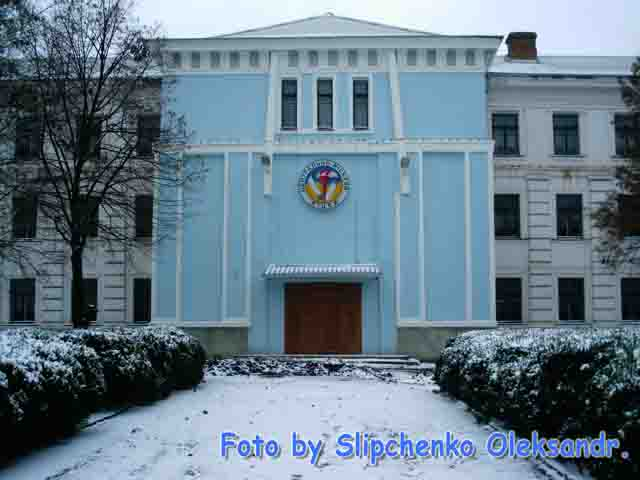

Читаєш, і серце тьохкає у грудях. Бо – правду писано. Дійсно тут вітають кожного, хто прагне отримати справжні знання. А що таке ліцей? По-перше, це колишня школа №25, кремезна стара будівля з товстими стінами і вибагливими прикрасами. По-друге, це освічений колектив педагогів з великим досвідом роботи.  Всі вчителі здійснюють індивідуальний підхід до учнів, допомагаючи їм розкрити свої таланти. Тож не дивно, що в Центрально-Міському ліцеї навчаються найстаранніші, найобдарованіші діти.
Всі вчителі здійснюють індивідуальний підхід до учнів, допомагаючи їм розкрити свої таланти. Тож не дивно, що в Центрально-Міському ліцеї навчаються найстаранніші, найобдарованіші діти.  Тут можна зустріти учасників і переможців районних, міських, обласних і республіканських конкурсів та олімпіад, поетів і прозаїків, талановитих співаків, музикантів, композиторів, танцюристів, дітей з золотими руками і серцем. По-третє, це громада суспільно-корисних особистостей, що створила організацію учнівського самоврядування “ПРОМІНЬ”. Це – парламент ліцею. Поєднання усіх цих корисних для людей якостей і є запорукою популярності ліцею, основою його процвітання.
Тут можна зустріти учасників і переможців районних, міських, обласних і республіканських конкурсів та олімпіад, поетів і прозаїків, талановитих співаків, музикантів, композиторів, танцюристів, дітей з золотими руками і серцем. По-третє, це громада суспільно-корисних особистостей, що створила організацію учнівського самоврядування “ПРОМІНЬ”. Це – парламент ліцею. Поєднання усіх цих корисних для людей якостей і є запорукою популярності ліцею, основою його процвітання.